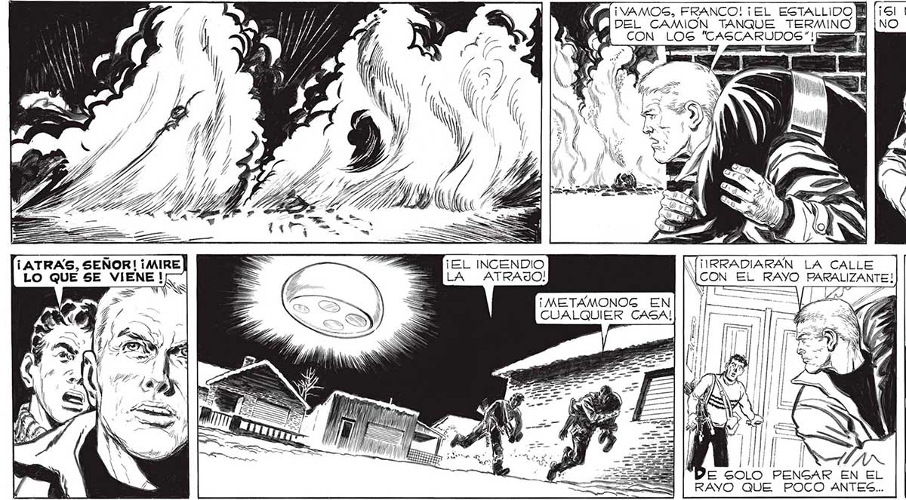
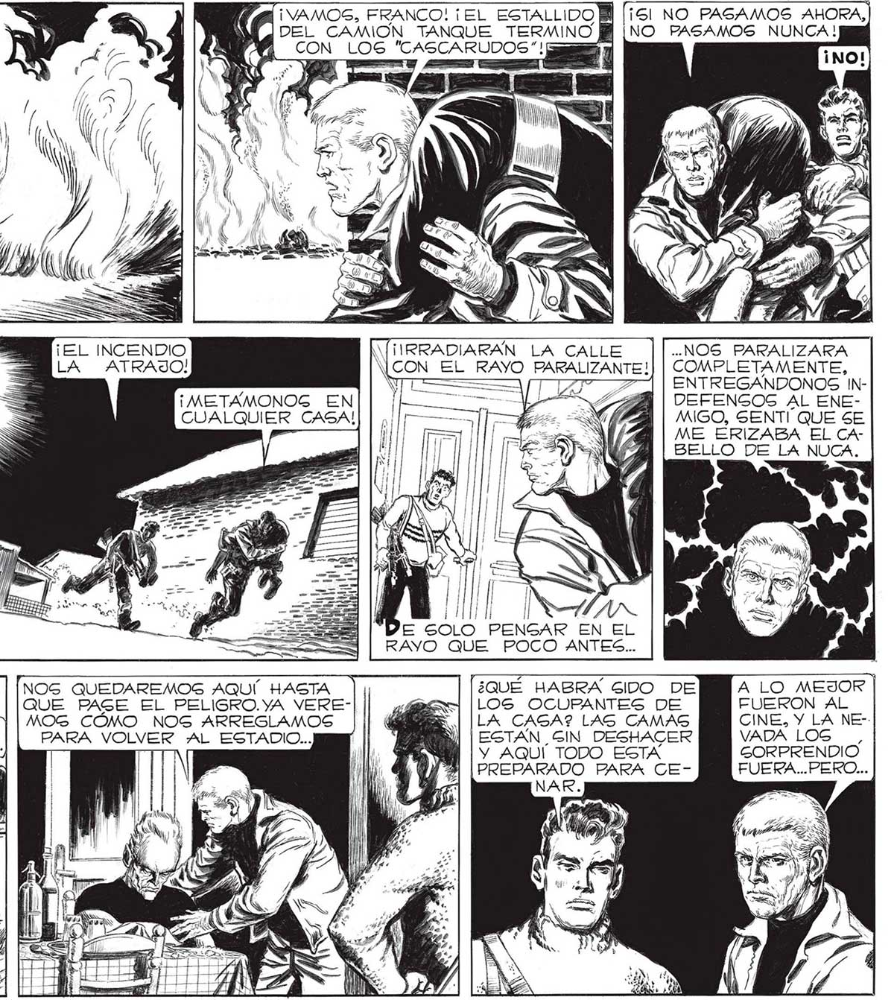

170 (MINSA FRANCO! ¡EL ESTALLIDOM [is NO PASAMOS AHORA, MSM DEL CAMION TANQUE TERMINO BM [NO PASAMOS NUNCA! A CON LOS "CASCARUDOS"! sl Y TU E ] SS NS y ) Sy Y) YY) / f : Z E 4 es a A TN Ls , Y, / las y OIR j > o > ¡ATRAS, SEÑOR! ¡MIRE ? E ¡EL INCENDIO ..NOS PARALIZARA LO QUE SE VIENE !- : JN LA ATRAJO) RAYO PARALIZANTE!| | COMPLETAMENTE, A = SÍ === /7 VA ENTREGANDONOS INLES, 14888 | DEFENGOS AL ENEMIGO, SENTI QUE SE ME ERIZABA EL CABELLO DE LA NUCA. I' ¡ / YE SOLO PENGAR EN EL RAYO QUE POCO ANTES... A No ALEJAMOS DE LACALLE LO MAS POSIBLE... _HAGTA LA COCINA NO PARAMOS ... iy [AQUÍ ESTAMOS GÍ, MIENTRAS NO Mi. 7] SEGUROS. NOS DESCUBRAN... NOS QUEDAREMOS AQUÍ. HASTA ¿QUE HABRA GIDO DE A LO MEJOR QUE PAGE EL PELIGRO.YA VERE- y E LOS OCUPANTES DE FUERON AL MOG COMO NOG ARREGLAMOS ADA LA CAGA? LAG CAMAS CINE, Y LA NE-PARA VOLVER ¡AL ESTADIO... ¿Ya ESTAN GIN DESHACER VADA LOG , MI Y Y AQUI TODO ESTA GORPRENDIO [PREPARADO PARA CE- FUERA... PERO... NAR.

